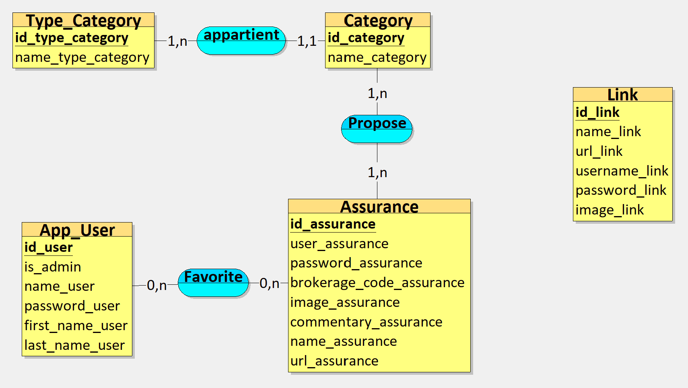
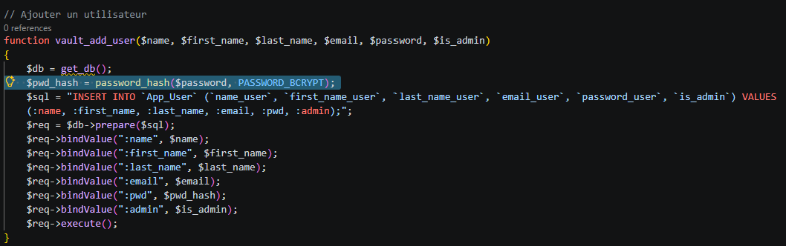

Jolan BERTIN S4A1
jolan.bertin@edu.univ-fcomte.frSavoir-faire suivi de projet
Cette partie permet d'expliquer comment le projet à été encadré tout au long de sa réalisation.Créer une application web répondant à un cahier des charges

Savoir-faire élémentaire : Créer des fonctionnalités pertinentes aux besoins utilisateurs , S'auto-former sur de nouveaux langages et outils , Créer une base de données et sécuriser les informations qu'elle contient et Lier le backend et le frontend d'une application web (en utilisant le modèle MVC) .

Trace 13 : Modèle Conceptuel de Données (MCD) créée pour l'application webComme dis précédemment, les besoins énoncés pour le site étaient les suivants :
- - pouvoir stocker des assurances,
- - pouvoir les filtrer,
- - être redirigé, lors du clic sur une assurance, vers sa page de login avec les informations de
connexion relatives à celle-ci préremplies,
- - gérer les accès à l'application,
- - et déployer le site sur WordPress.
Bien que le cahier des charges soit plutôt simple, il fallait le traduire pour le développement. Pour ce qui est du stockage des assurance, puisque l'entreprise pour laquelle le site est développée est en expension constante, il ne suffisait pas de faire un simple site vitrine sur WordPress. Pour se faire j'ai donc, créé une application PHP/MySQL en utilisant un modèle MVC (Model View Controller) . Ce choix s'est fait après de nombreuses recherches sur WordPress, et de ce qui est compatible et le plus simple afin que je puisse développé et ensuite le déployer.
Pour se qui est de pouvoir filtrer les différents éléments, j'ai donc d'avantage questionné les futurs utilisateurs, je me suis aussi rensigné notamment en m'insirant des différents éléments qu'utilisent l'entreprise (excels, site vitrine) afin que le filtre soit le plus efficace et familier pour l'équipe . En effet, les assurances étaient recensées comme offrant différentes services (assurance moto, assurance voiture, assurance chien, ...) elles mêmes apparteneant à des types de services (Automobile, Animaux, Mutuelle, ...). Je me suis donc inspiré de ces regroupements pour mettre en place la base de données (trace 13). On voit bien que la tables Assurance Propose 1 ou plusieurs services (Category) qui appartiennent à un type de service (Type_Category).

Trace 14 : Fonction d'ajout d'un utilisateurPuis, concernant le deployement de l'application sur
Enfin, pour gérer l'accès à lapplication (via un login) et pour le stockage des différents accès aux assurance (pour pouvoir se connecter automatiquement), j'ai choisi de hasher et chiffrer les données dans la base de données afin que celles-ci ne soient pas présentes en clair et non accessibles .
Sur la trace 14, est visible la fonction d'ajout d'un utilisateur. Évidement, cette fonction fait partie du modèle de l'application et n'est appelée que si les données du formulaire d'ajout sont correctes (données obligatoire, complexité du mot de passe, droits administrateur de l'utilisateur qui en créé un, mot de passe saisi et ressaisi identiques, ...). La ligne en surbriance est la ligne qui permet de hasher le mot de passe saisi lors de la création d'un utilisateur.